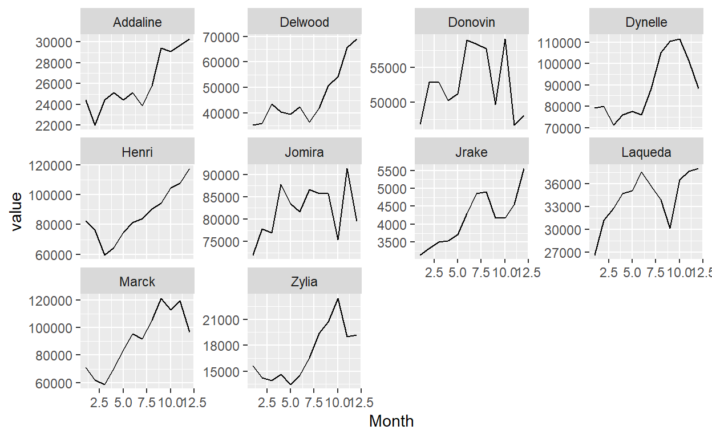
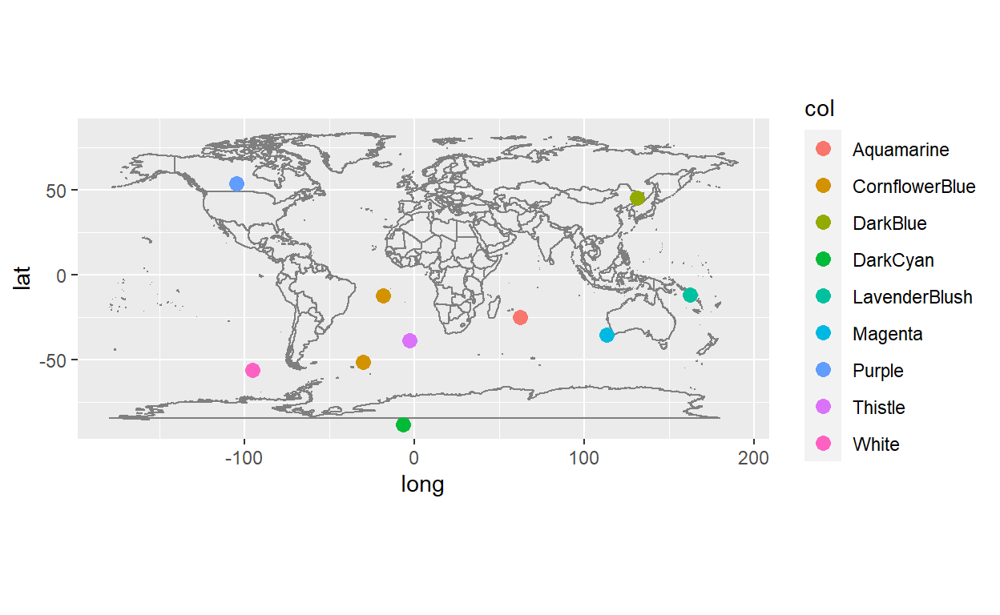
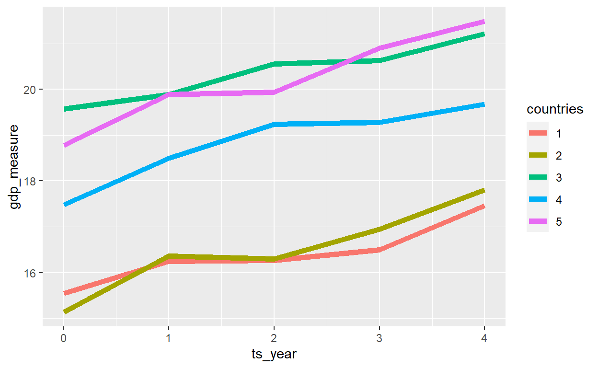
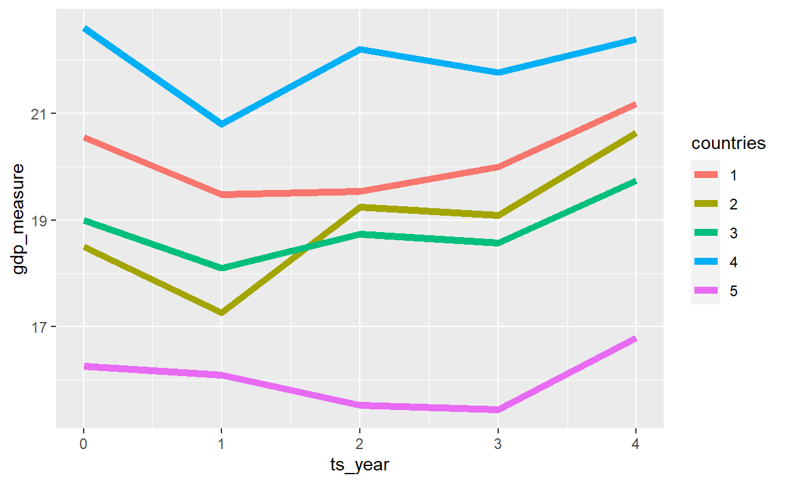

We will explore the packages wakefield, rcorpora, charlatan, fabricatr, and GenOrd which can be helpful for data simulation.
When we simulate data we can rely on the distribution functions like rnorm, rexp and sample from base R. However, we can also leverage the great work from authors of packages which were written to make the simulation process easier. In this blogpost I will explore some of them.
Before starting with the simulation packages, we can load these two packages which will help with data transformation and visualization.
Looking for interesting packages around data simulation I stumbled across the {wakefield} package by Tyler Rinker.
Introduction can be found here. It is very easy to create data with all types of variables.
r_data_frame(
n = 500,
id,
age,
iq,
height,
died,
animal,
internet_browser,
political
)
# A tibble: 500 x 8
ID Age IQ Height Died Animal Browser Political
<chr> <int> <dbl> <dbl> <lgl> <fct> <fct> <fct>
1 001 69 91 69 TRUE Chinchilla Chrome Democrat
2 002 49 87 69 FALSE Galapagos Penguin Chrome Republican
3 003 60 112 64 FALSE Birds Of Paradise Firefox Republican
4 004 43 97 69 TRUE Sea Squirt IE Democrat
5 005 32 92 75 TRUE Galapagos Penguin Chrome Republican
6 006 42 99 70 FALSE Ocelot Chrome Republican
7 007 87 91 70 FALSE Poison Dart Frog Chrome Republican
8 008 23 91 67 TRUE Drever Firefox Democrat
9 009 54 94 67 FALSE Pointer Safari Democrat
10 010 86 96 69 TRUE Sea Squirt Chrome Democrat
# ... with 490 more rowsThere are a lot of predefined variables that you can use. (Call variables(type="matrix",ncols=5) to see them.)
[,1] [,2] [,3] [,4]
[1,] "age" "dice" "hair" "military"
[2,] "animal" "dna" "height" "month"
[3,] "answer" "dob" "income" "name"
[4,] "area" "dummy" "internet_browser" "normal"
[5,] "car" "education" "iq" "political"
[6,] "children" "employment" "language" "race"
[7,] "coin" "eye" "level" "religion"
[8,] "color" "grade" "likert" "sat"
[9,] "date_stamp" "grade_level" "lorem_ipsum" "sentence"
[10,] "death" "group" "marital" "sex"
[,5]
[1,] "sex_inclusive"
[2,] "smokes"
[3,] "speed"
[4,] "state"
[5,] "string"
[6,] "upper"
[7,] "valid"
[8,] "year"
[9,] "zip_code"
[10,]
attr(,"class")
[1] "matrix" "array" Additionally, you can access the distribution functions easily and tweak parameters of the predefined functions.
test <- r_data_frame(
n = 500,
id,
age(x=18:50),
`Reading(mins)` = rpois(lambda=20),
income(digits=0)
)
# A tibble: 500 x 4
ID Age `Reading(mins)` Income
<chr> <int> <int> <dbl>
1 001 39 22 49775
2 002 19 25 19148
3 003 19 20 32714
4 004 41 19 11000
5 005 35 21 64802
6 006 29 20 36548
7 007 43 21 62348
8 008 35 18 24371
9 009 50 18 135653
10 010 48 23 51157
# ... with 490 more rowsLooks too perfect? Include random missing values in columns 2 and 4: (Note: If you create a larger dataframe, you can use the %>% operator to structure your code better).
# A tibble: 500 x 4
ID Age `Reading(mins)` Income
<chr> <int> <int> <dbl>
1 001 39 22 NA
2 002 19 25 NA
3 003 19 20 NA
4 004 41 19 11000
5 005 NA 21 64802
6 006 29 20 36548
7 007 43 21 NA
8 008 35 18 NA
9 009 50 18 NA
10 010 NA 23 51157
# ... with 490 more rows{wakefield} allows us to create several variables which can be seen as a sequence, for example survey results.
r_series(likert,j = 5,n=10,name="Question")
# A tibble: 10 x 5
Question_1 Question_2 Question_3 Question_4 Question_5
* <ord> <ord> <ord> <ord> <ord>
1 Strongly Dis~ Agree Disagree Strongly Agr~ Disagree
2 Disagree Strongly Dis~ Strongly Agr~ Agree Agree
3 Strongly Agr~ Neutral Strongly Agr~ Strongly Agr~ Disagree
4 Disagree Strongly Agr~ Neutral Strongly Agr~ Strongly A~
5 Agree Strongly Dis~ Agree Strongly Dis~ Neutral
6 Strongly Dis~ Disagree Strongly Agr~ Strongly Agr~ Disagree
7 Strongly Agr~ Strongly Agr~ Strongly Dis~ Strongly Agr~ Agree
8 Strongly Agr~ Neutral Neutral Agree Strongly A~
9 Strongly Dis~ Strongly Agr~ Strongly Dis~ Neutral Strongly A~
10 Strongly Dis~ Disagree Disagree Strongly Dis~ Disagree These can also be packaged inside a data frame, for example when simulating test results for students.
r_data_frame(
n=10,
Student=id,
age=rpois(14),
r_series(grade,j=3,integer=TRUE,name="Test")
)
# A tibble: 10 x 5
Student age Test_1 Test_2 Test_3
<chr> <int> <int> <int> <int>
1 01 16 89 85 91
2 02 17 91 87 85
3 03 13 84 88 85
4 04 13 91 89 83
5 05 10 86 87 78
6 06 15 87 87 84
7 07 12 83 85 90
8 08 16 89 94 84
9 09 14 93 82 91
10 10 10 89 86 87That is great but not very real, because the test results are completely independent from each other. The relate parameter inside the r_series function helps to connect the results, and the format is fM_sd.
Examples: * additive: +3_1: The test results get better on average 3 points with a standard deviation of 1. * multiplicative: *1.05_0.2: The results get better on average 5% with a standard deviation of 0.2.
r_data_frame(
n=10,
Student=id,
age=rpois(14),
r_series(grade,j=3,integer=TRUE,name="Test",relate="+3_1")
)
# A tibble: 10 x 5
Student age Test_1 Test_2 Test_3
<chr> <int> <variable> <variable> <variable>
1 01 13 96.6 98.8 99.6
2 02 18 90.7 93.4 98.3
3 03 13 83.8 88.0 92.7
4 04 10 91.6 93.3 96.1
5 05 15 92.3 95.5 99.6
6 06 16 88.9 92.0 95.8
7 07 11 93.0 96.4 98.9
8 08 10 91.5 95.0 96.5
9 09 14 85.9 86.5 90.3
10 10 13 84.5 88.4 90.9 With this in mind, you can create customer balances over time very easily.
balances <- r_data_frame(
n=10,
Client=name,
age,
r_series(income,j=12,name="Month",relate="*1.03_0.1")
)
This result is worth to be visualized.
balances %>%
tidyr::pivot_longer(-c(1,2),names_to="Month") %>%
mutate(Month=readr::parse_number(Month)) %>%
ggplot(aes(x=Month,y=value))+geom_line()+facet_wrap(~Client,scales="free_y")

We can see that there are customers who had very positive balance development and others whose balances were fluctuating more or declining. However, when we simulate a sufficiently large number of customers, we will observe that on average the increase each month will be the desired 3% with a standard deviation of 0.1.
Check the github repository here.
The rcorpora library has 293 collections of words that can be very helpful for data simulation.
[1] 293 [1] "words/stopwords/de"
[2] "humans/prefixes"
[3] "humans/thirdPersonPronouns"
[4] "animals/cats"
[5] "humans/celebrities"
[6] "music/bands_that_have_opened_for_tool"
[7] "technology/knots"
[8] "foods/iba_cocktails"
[9] "words/adjs"
[10] "societies_and_groups/fraternities/professional"To view the words of one collection use the name in the corpora() function.
corpora("foods/pizzaToppings")
$description
[1] "A list of pizza toppings."
$pizzaToppings
[1] "anchovies" "artichoke" "bacon"
[4] "breakfast bacon" "Canadian bacon" "cheese"
[7] "chicken" "chili peppers" "feta"
[10] "garlic" "green peppers" "grilled onions"
[13] "ground beef" "ham" "hot sauce"
[16] "meatballs" "mushrooms" "olives"
[19] "onions" "pepperoni" "pineapple"
[22] "sausage" "spinach" "sun-dried tomato"
[25] "tomatoes" Let see how we can use this in a simulated dataframe.
tibble(
first_name=corpora("humans/firstNames")$firstNames %>% sample(100,replace=TRUE),
last_name=corpora("humans/lastNames")$lastNames %>% sample(100,replace=TRUE),
self_description=corpora("humans/descriptions")$descriptions %>% sample(100,replace=TRUE),
home_country=corpora("geography/countries")$countries %>% sample(100,replace=TRUE),
favorite_pizza_topping=corpora("foods/pizzaToppings")$pizzaToppings %>% sample(100,replace=TRUE)
)
# A tibble: 100 x 5
first_name last_name self_description home_country favorite_pizza_~
<chr> <chr> <chr> <chr> <chr>
1 Jacob Peterson lean Peru sausage
2 Ruby Roberts immature Nicaragua Canadian bacon
3 Carson Gonzales quick Haiti bacon
4 Shane Stewart one-sided Nauru ground beef
5 Molly Rice civil Iraq breakfast bacon
6 Stephanie Chavez ambitious Monaco green peppers
7 Kaden Gutierrez picky Egypt Canadian bacon
8 Valerie Foster irritating Malta spinach
9 Genesis Owens talented Tuvalu green peppers
10 Amy Wood unfriendly Vatican Cit~ hot sauce
# ... with 90 more rowsSimilar to wakefield, charlatan has some out-of-the-box variables that can be used in your simulated data.
[1] "Development worker, community"
[2] "Veterinary surgeon"
[3] "Advertising account executive"
[4] "Optician, dispensing"
[5] "Museum education officer"
[6] "Research officer, trade union"
[7] "Engineer, automotive"
[8] "Pharmacist, community"
[9] "Sales promotion account executive"
[10] "Customer service manager" You can even use get typical names or jobs for a given country. To see the available languages and countries type charlatan::PersonProvider$new()$allowed_locales().
ch_name(n=10,locale="de_DE")
[1] "Ernestine Drubin" "Burkhardt Koch B.Sc."
[3] "Christof Barth B.Eng." "Univ.Prof. Burkhardt Beier"
[5] "Lambert Mans-Bolnbach" "Prof. Darius Anders B.Sc."
[7] "Univ.Prof. Felix Rmer B.Sc." "Kay-Uwe Atzler-Dhn"
[9] "Reingard Neuschfer B.Eng." "Klaus-Dieter Hlzenbecher" ch_phone_number(locale="de_DE",n=10)
[1] "+49(0)7367 624040" "03154789561" "(08044) 075665"
[4] "(02605) 71714" "+49(0)6273434607" "06457 409315"
[7] "00114 07336" "+49(0)6680 38728" "04223885899"
[10] "+49 (0) 4533 749527"A nice small application with fake locations and random R colors.
locations <- data.frame(lon=ch_lon(n=10),lat=ch_lat(n=10),col=ch_color_name(n=10))
ggplot(locations)+
borders("world")+
geom_point(aes(x=lon,y=lat,col=col),size=3)+
coord_quickmap()

Easy creation of hierarchical data is possible with {fabricatr}. In this example there are five families, each one has between 1 and 12 members. Each family member has between 1 and 5 accounts. With add_level() we can automatically produce a table that shows all accounts of all members in all families.
library(fabricatr)
fabricate(
family = add_level(N = 5,
n_members = sample(1:12, N, replace = TRUE,prob=12:1)),
members = add_level(N = n_members,
n_accounts = sample(1:5,N,replace=TRUE,prob=(5:1)^2)),
account = add_level(N = n_accounts)
) %>%
head(10)
family n_members members n_accounts account
1 1 2 01 2 01
2 1 2 01 2 02
3 1 2 02 1 03
4 2 9 03 4 04
5 2 9 03 4 05
6 2 9 03 4 06
7 2 9 03 4 07
8 2 9 04 2 08
9 2 9 04 2 09
10 2 9 05 2 10Link levels. We can create 15 clients with their birth year and join year and some correlation between both variables.
df <- fabricate(
age = add_level(N=51, birth_year=1950:2000),
tenure = add_level(N = 20, join_year=1991:2010, nest = FALSE),
client = link_levels(N = 15, by = join(age, tenure, rho = 0.7))
)
df %>% select(client,birth_year,join_year)
client birth_year join_year
1 01 1971 1998
2 02 1999 2009
3 03 1989 2006
4 04 1973 2008
5 05 1978 1996
6 06 1983 2001
7 07 1960 1996
8 08 1978 1997
9 09 1975 1997
10 10 1984 2002
11 11 1997 2008
12 12 1991 2002
13 13 1963 1999
14 14 1996 2009
15 15 1984 2001fabricatr has an amazing function to create ordered categorical data.
The function we need is draw_ordered. It internally simulates a numeric variable (x) and breaks them into predefined categories.
draw_ordered(
x = rnorm(10),
breaks = c(-2,-1,0.8,2),
break_labels = c("Very boring","Boring","OK","Interesting","Very Interesting")
)
[1] OK Boring OK Interesting OK
[6] Boring OK OK Interesting Interesting
Levels: Very boring Boring OK Interesting Very InterestingLets take a look at another example where we have two types of clients, gold clients that receive a yearly gift from the bank and standard clients that do not. How could we simulate their responses to a satisfaction survey?
df <- fabricate(
N = 100,
gold_client_flag = draw_binary(prob = 0.3, N),
satisfaction = draw_ordered(
x = rnorm(N, mean = -0.4 + 1.2 * gold_client_flag),
breaks = c(-1.5, -0.5, 0.5, 1.5),
break_labels = c("Very Unsatisfied", "Unsatisfied", "Neutral",
"Satisfied", "Very Satisfied")
)
)
ID gold_client_flag satisfaction
1 001 0 Very Unsatisfied
2 002 0 Neutral
3 003 0 Neutral
4 004 0 Satisfied
5 005 0 Unsatisfied
6 006 0 NeutralWe can summarize the results and see the differences between the two groups. Ideal data for teaching hypothesis testing.
df %>% count(gold_client_flag,satisfaction) %>%
tidyr::pivot_wider(id_cols=satisfaction,names_from="gold_client_flag",values_from="n")
# A tibble: 5 x 3
satisfaction `0` `1`
<fct> <int> <int>
1 Very Unsatisfied 12 NA
2 Unsatisfied 22 2
3 Neutral 29 9
4 Satisfied 11 9
5 Very Satisfied 1 5Example from this article.
This example contains the GDP of five countries over the course of five years.
panel_units <- fabricate(
countries = add_level(
N = 5,
base_gdp = runif(N, 15, 22),
growth_units = runif(N, 0.2, 0.8),
growth_error = runif(N, 0.1, 0.5)
),
years = add_level(
N = 5,
ts_year = 0:4,
gdp_measure = base_gdp + (ts_year * growth_units) + rnorm(N, sd=growth_error)
)
)
head(panel_units,10)
countries base_gdp growth_units growth_error years ts_year
1 1 15.81650 0.2936397 0.2843482 01 0
2 1 15.81650 0.2936397 0.2843482 02 1
3 1 15.81650 0.2936397 0.2843482 03 2
4 1 15.81650 0.2936397 0.2843482 04 3
5 1 15.81650 0.2936397 0.2843482 05 4
6 2 15.25248 0.5143369 0.4467515 06 0
7 2 15.25248 0.5143369 0.4467515 07 1
8 2 15.25248 0.5143369 0.4467515 08 2
9 2 15.25248 0.5143369 0.4467515 09 3
10 2 15.25248 0.5143369 0.4467515 10 4
gdp_measure
1 15.54446
2 16.25074
3 16.26999
4 16.50294
5 17.46510
6 15.13692
7 16.36070
8 16.30388
9 16.94710
10 17.80540
We can take this to the next level and introduce some year specific information and then cross this with the country specific information. We just have to add one layer.
panel_global_data <- fabricate(
years = add_level(
N = 5,
ts_year = 0:4,
year_shock = rnorm(N, 0, 0.5) #each year has a global trend
),
countries = add_level(
N = 5,
base_gdp = runif(N, 15, 22),
growth_units = runif(N, 0.2, 0.5),
growth_error = runif(N, 0.1, 0.5),
nest = FALSE
),
country_years = cross_levels(
by = join(years, countries),
gdp_measure = base_gdp + year_shock + (ts_year * growth_units) +
rnorm(N, sd=growth_error)
)
)

This package helps to create discrete random variables with prescribed correlation matrix and marginal distributions.
Read the list as follows:
corrcheck(marginal)
[[1]]
4 x 4 Matrix of class "dsyMatrix"
[,1] [,2] [,3] [,4]
[1,] 1.0000000 -0.8333333 -0.8215838 -0.8660254
[2,] -0.8333333 1.0000000 -0.9128709 -0.9237604
[3,] -0.8215838 -0.9128709 1.0000000 -0.9486833
[4,] -0.8660254 -0.9237604 -0.9486833 1.0000000
[[2]]
4 x 4 Matrix of class "dsyMatrix"
[,1] [,2] [,3] [,4]
[1,] 1.0000000 0.8333333 0.8215838 0.8660254
[2,] 0.8333333 1.0000000 0.9128709 0.9237604
[3,] 0.8215838 0.9128709 1.0000000 0.9486833
[4,] 0.8660254 0.9237604 0.9486833 1.0000000This function shows what are allowable ranges for the correlation matrix, given the input from the marginal distributions.
We will create 1000 observations, with the given correlation matrix. Each variable will have the marginal distribution described above.
n <- 1000 # sample size
m <- ordsample(n, marginal, Sigma)
df <- data.frame(m)
head(df)
X1 X2 X3 X4
1 1 1 4 1
2 2 3 4 5
3 1 2 2 3
4 2 3 3 4
5 2 3 3 5
6 2 3 4 5Lets verify that the data is actually what we expected. We check the correlation and the marginal distribution for two of the variables.
cor(df)
X1 X2 X3 X4
X1 1.0000000 0.4894198 0.3312862 0.2572479
X2 0.4894198 1.0000000 0.4567171 0.3850669
X3 0.3312862 0.4567171 1.0000000 0.4893278
X4 0.2572479 0.3850669 0.4893278 1.0000000df %>% count(X4)
X4 n
1 1 182
2 2 193
3 3 218
4 4 212
5 5 195df %>% count(X1)
X1 n
1 1 584
2 2 416Later we can rename the columns and values, but will have assured that they have the desired correlations.
In this blogpost by Joseph Rickert on R Views.